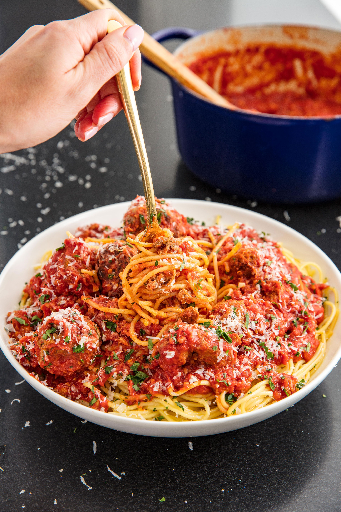

Godfather Sunday Sauce

Description
Ditch the jarred marinara and whip up some killer homemade spaghetti sauce.
Ingredients
- 1/4 c. plus 2 tbsp. extra-virgin olive oil, divided
- 1 lb. ground beef
- 1/2 c. whole milk
- 1/2 c. Italian bread crumbs
- 1 large egg
- Kosher salt, to taste
- Freshly ground black pepper
- 1/2 c. freshly grated Parmesan, plus more for serving
- 1/4 c. finely minced Italian parsley
- 4 cloves garlic, finely minced (divided)
- 1 lb. hot Italian sausage, cut into 1" pieces
- 2 28-oz. cans crushed tomatoes
- 2 tbsp. tomato paste
- 1/2 c. red wine
- Pinch of sugar
- 1 lb. Cooked spaghetti
Steps
- In a large pot, heat 2 tablespoons olive oil over medium heat.
- Meanwhile, mix together ground beef, milk, bread crumbs, egg, salt, pepper, Parmesan, parsley, and half the garlic in a large bowl. Using your hands, form the mixture into large meatballs.
- When the oil is hot, fry meatballs until browned on all sides and almost cooked through, 12 to 15 minutes. Drain on paper towels.
- Heat another 2 tablespoons oil and cook sausage, turning occasionally, until browned on all sides, 5 to 8 minutes. Add cooked sausage to plate with meatballs.
- Wipe skillet clean, then add remaining olive oil. Cook remaining garlic over medium heat until fragrant, about 1 minute. Add tomatoes and tomato paste and stir to combine. Stir in sausage and meatballs, then add wine and sugar. Simmer for 20 minutes.
- Serve over a large bowl of spaghetti. Garnish with Parmesan.